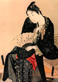

главная  персоналии
персоналии  Томоэ
Томоэ
главная |

Личность в историикраткая энциклопедияПроект «Личность в истории» посвящен людям — современникам грандиозных исторических событий, носителям редких качеств или людям, взгляды которых опередили их время. |
|||||||||
Коротко |
Статьи |
Персоналии |
Литература |
||||||
Томоэ |
|||||||||
|
«…во многих эпизодах, относящихся к периоду возвышения букё, упоминаются женщины, которые исполняли преимущественно воинские обязанности и при случае даже присоединялись к своим мужьям на поле боя.» Рати О., Уэстбрук А. Самураи. |
 фрагмент гравюры Китагава Утамаро | ||||||||
Биографическая справкаТомоэ, дочь Канэтоо, воспитавшего полководца Ёсинаку из Кисо (1154-1184 гг.), сестра сподвижников Ёсинаки — Канэхиры Имаи и Канэмицу Хирути. Образ Томоэ был весьма необычен для средневековой Японии — эта женщина носила тяжелые доспехи и принимала участие в сражениях наравне с мужчинами. Эпическое произведение того времени, «Повесть о доме Тайра», не сообщает о статусе Томоэ. Возможно она была женой Ёсинаку, а возможно их связывали другие, например, вассальные отношения. Хронология
Цитаты«Была она искусным стрелком из лука, славной воительницей, одна равна тысяче! Верхом ли, в пешем ли строю — с оружием в руках не страшилась она ни демонов, ни богов, отважно спускалась в любую пропасть, а когда начиналась битва, надевала тяжелый боевой панцирь, опоясывалась мечом, брала в руки мощный лук и вступала в бой в числе первых, как самый храбрый, доблестный воин! Не раз гремела слава о её подвигах, никто не мог сравниться с нею в отваге». («Повесть о доме Тайра») «О, если бы мне встретился сейчас какой-нибудь достойный противник! Пусть господин в последний раз увидел бы как я умею биться». (Томоэ) «Особенно хороша была Томоэ — белолица, с длинными волосами, писаная красавица!» («Повесть о доме Тайра») «В это время внезапно появился прославленный силач Моросигэ Онда, уроженец земли Мусаси, и с ним дружина из тридцати вассалов. Томоэ на скаку вклинилась в их ряды, поравняла коня с конем Онды, крепко-накрепко с ним схватилась, стащила с коня, намертво прижала к передней луке своего седла, единым махом срубила голову и швырнула её на землю». («Повесть о доме Тайра») «Она обладала большой физической силой и безрассудной отвагой, мастерски владела оружием и превосходно держалась в седле». (Рати О., Уэстбрук А. Самураи. «…и тогда их лидер, Исида Ияёси, попытался схватить Томоэ. Она стегнула лошадь, её рукав, который он удерживал, разорвался, и кусок рукава остался у него в руке. Разъяренная этим, она развернула лошадь, бросилась в атаку на своего преследователя и отрубила ему голову, которую впоследствии преподнесла мужу». (Рати О., Уэстбрук А. Самураи. Список литературы
|
|||||||||
|